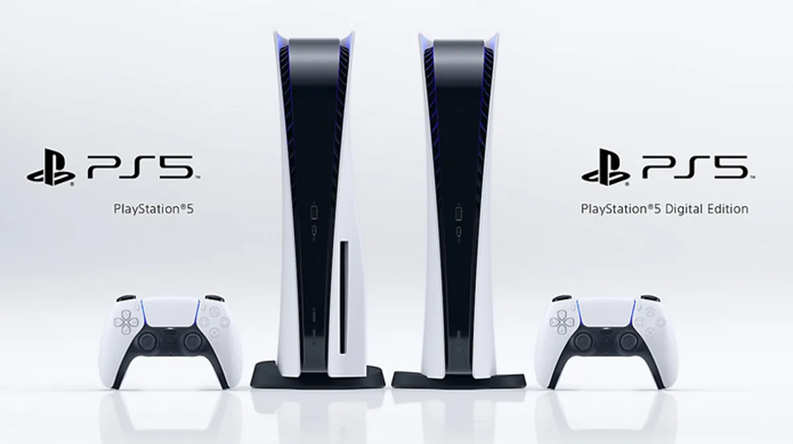

Lançamento do PS5
A Sony anunciou nesta quarta-feira (16) que o PlayStation 5 será lançado no Brasil em 19 novembro a R$ 4.999, com uma versão sem leitor de discos por R$ 4.499. O console começará a ser vendido no país uma semana após seu lançamento nos Estados Unidos e em outros países, com as duas versões custando US$ 499 e US$ 399, respectivamente. O anúncio dos preços prepara o palco para uma disputa de fim de ano entre Xbox, da Microsoft, e PlayStation, à medida que os consumidores continuam a migrar para consoles otimizados para jogos que oferecem títulos exclusivos. A Microsoft anunciou na semana passada que o Xbox Series X estará à venda em 10 de novembro por US$ 499, com uma versão menos potente por US$ 299, já que o Xbox aposta que oferecer opções aos consumidores superará os riscos de lançar dois aparelhos distintos ao mesmo tempo. O PlayStation 5 e o Xbox Series X têm o mesmo preço, mas o PlayStation 5 Digital Edition de US$ 399 “oferece um desconto substancial sem nenhum prejuízo em termos de desempenho ou hardware, apenas o leitor de discos”, disse Guilherme Fernandes, analista da empresa de análise de jogos Newzoo. Também foram anunciados jogos que incluem Final Fantasy 16, da Square Enix, e um RPG da franquia Harry Potter.